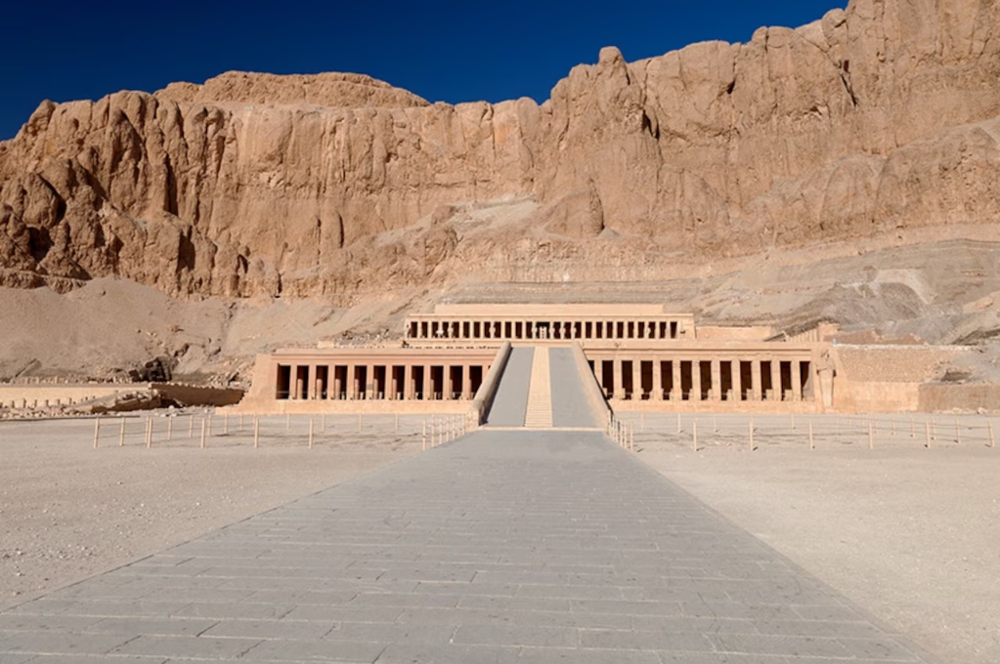
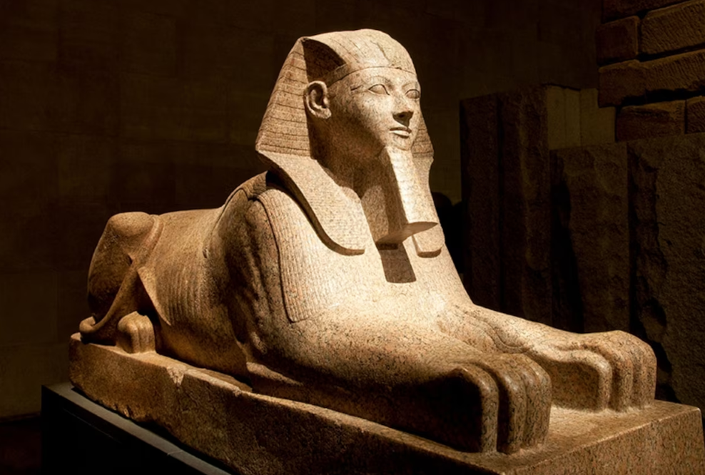

Hatshepsut, like other pharaohs, was the child of a king. Unlike the others, she was a woman.
One of only a few female pharaohs in thousands of years of ancient Egyptian history, Hatshepsut didn’t inherit her rulership like a man would have—only sons were allowed to succeed their fathers. She was born around 1504 B.C., and when her father, King Thutmose I, died without sons, Hatshepsut married her half-brother, Thutmose II, to help him become pharaoh.
When he died, his son—Hatshepsut’s stepson—became pharaoh, even though he was just three years old. Hatshepsut ruled in his name, but he was still considered the only pharaoh. But when Thutmose III was about eight years old, she took the throne herself and officially became his coruler around 1473 B.C. Some historians think she made the move because other people wanted to steal the throne, and she knew if they were both pharaohs they would be too powerful to overthrow. Hatshepsut and Thutmose III would rule together as pharaohs for the next 22 years.

Considered one of Egypt’s greatest pharaohs—man or woman—Hatshepsut brought great wealth and artistry to her land. She sponsored one of Egypt’s most successful trading expeditions, bringing back gold, ebony, and incense from a place called Punt (probably modern-day Eritrea, a country in Africa). She secured her legacy by building structures that still stand today. She added two hundred-foot-tall obelisks at the great temple complex at Karnak. (One is still intact.) And she built the mortuary Temple of Deir el Bahri, a structure with several floors of columns in front, where she’d eventually be buried.
Hatshepsut was usually carved or drawn as a man, complete with muscles and a beard, as was the artistic tradition for pharaohs. But historians knew the truth: She always made sure the art included a reference to being a woman, such as “Daughter of Re” or “His Majesty, Herself.” When she died in 1458 B.C., Egypt would not see as powerful a female ruler for another 1,400 years, when Cleopatra came to the throne.
